Knowing the parts, missing the whole: does machine learning understand new molecules built from what it already knows?
Knowing the parts, missing the whole
Overview
- Introduction: compositional generalisation, and why molecules are a clean test for it
- Motivation: how ML potentials are tested today, and what is missing
- GMD: the benchmark: known parts, new molecules
- Results: 13 models, five tasks, one failure mode
- Takeaways and what comes next
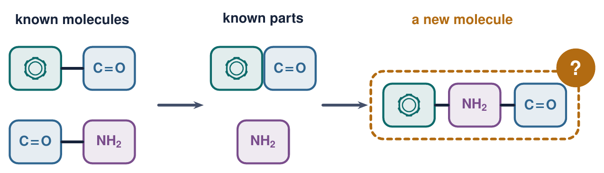
Let’s start with a question ML has asked for years: can models recombine what they know?
Compositional generalisation
- Train on the parts, test on new combinations of them
- A model that knows jump and walk twice should handle jump twice
- Standard models often fail: SCAN and COGS in language, CLEVR-CoGenT in vision
Most of these tests use synthetic tasks, where “correct” is defined by a grammar we wrote.
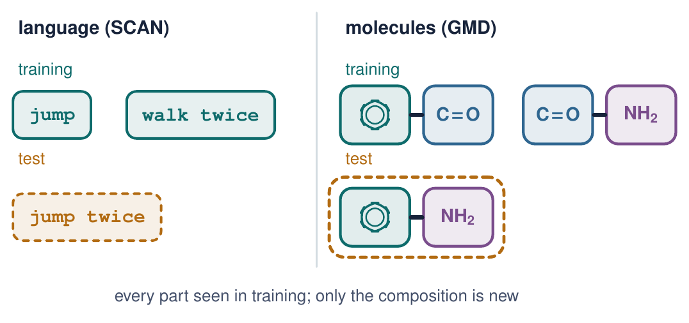
B. Lake, M. Baroni, ICML (2018); N. Kim, T. Linzen, EMNLP (2020); J. Johnson et al., CVPR (2017).
Is there a domain that is compositional by nature, with ground truth given by physics?
Molecules are compositional by construction
- Chemists read a molecule as parts: functional groups, rings, chains
- Parts carry their behaviour with them, which is why chemists can reason about molecules they have never met
- And the “correct answer” is not a rule we invented: it is quantum mechanics
Molecules are a natural testbed for compositional generalisation, with physically exact labels.
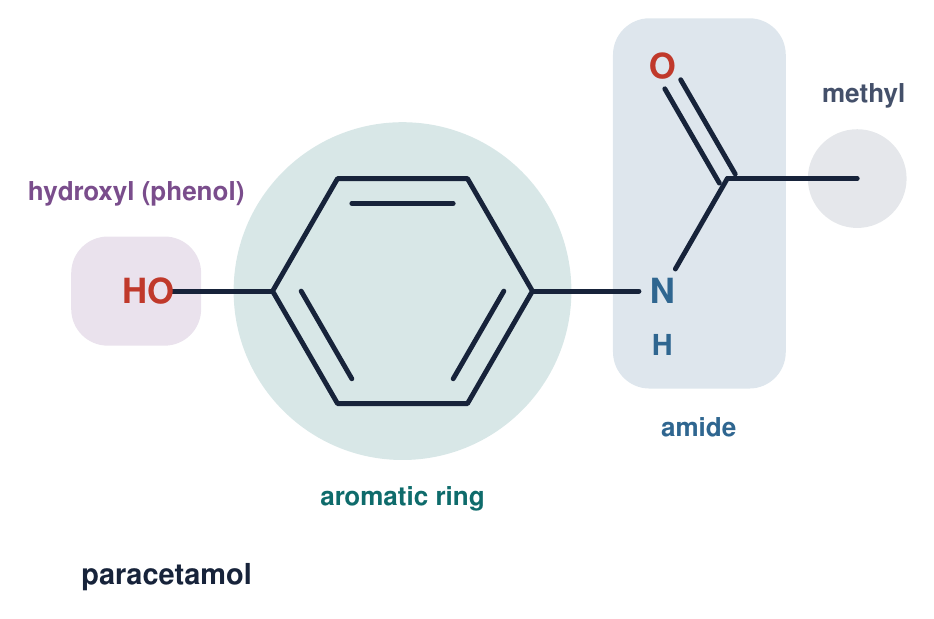
S. W. Benson, J. H. Buss, J. Chem. Phys. 29, 546 (1958).
So what does an ML model actually learn about a molecule?
Machine-learning interatomic potentials
- Input: element and 3D position of every atom
- Output: energy E and forces Fi = −∂E/∂ri
- Each atom sees a local neighbourhood; E is a sum over atoms
- Mostly equivariant GNNs: NequIP, MACE, EquiFormerV2
The architecture is built from local parts, so compositional generalisation looks like it should come for free.
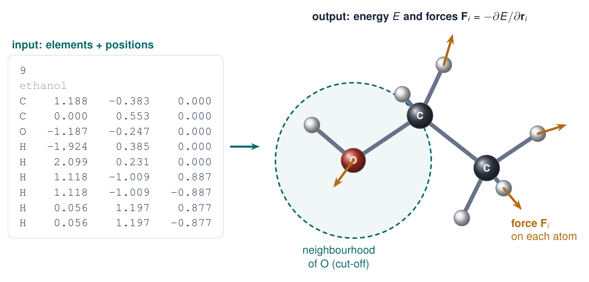
J. Behler, M. Parrinello, Phys. Rev. Lett. 98, 146401 (2007); I. Batatia et al., NeurIPS (2022).
But why learn energies at all, instead of computing them?
Labels are expensive
- Reference labels come from quantum chemistry: DFT scales roughly as N3, coupled cluster as N7
- Molecular dynamics needs 106 or more energy and force evaluations
- An MLIP pays the DFT cost once, at training time, then runs close to the speed of a classical force field
MLIPs amortise quantum chemistry. Their value depends entirely on how far they transfer.
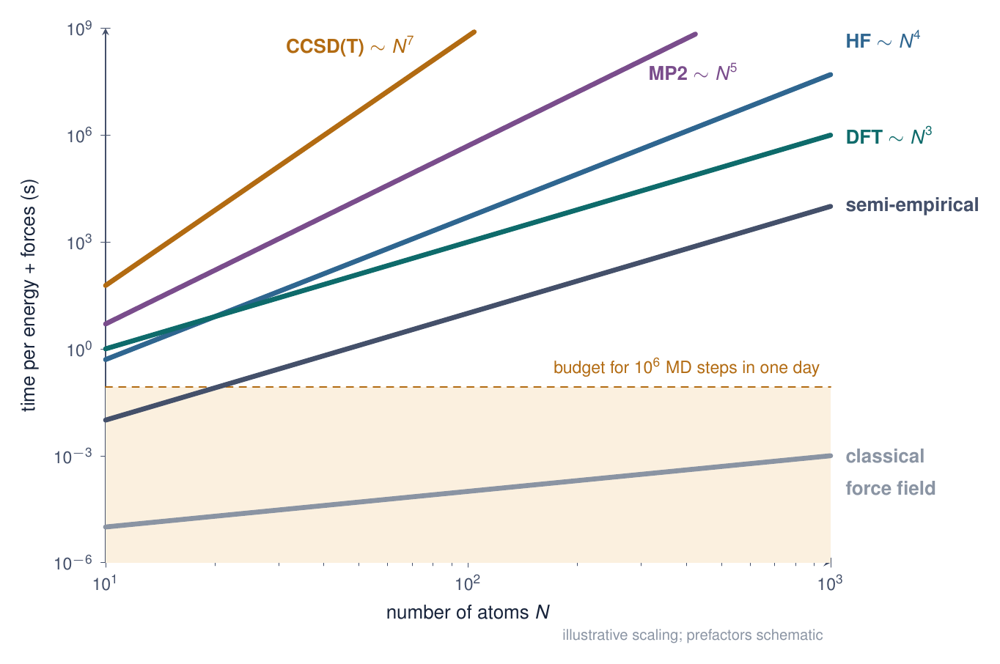
J. Behler, Chem. Rev. 121, 10037 (2021).
If labels are this expensive, why not pay once, at scale, for all of chemistry?
Foundation models for atoms
- More DFT calculations, bigger datasets: MPtrj (materials), OMol25 (molecules, 100M+ calculations)
- Pre-train once on millions of structures, then fine-tune or use zero-shot
- Examples: MACE-MP-0, UMA, PET-MAD
The assumption: they learn chemistry itself. Or do they stay grounded in what they have seen?
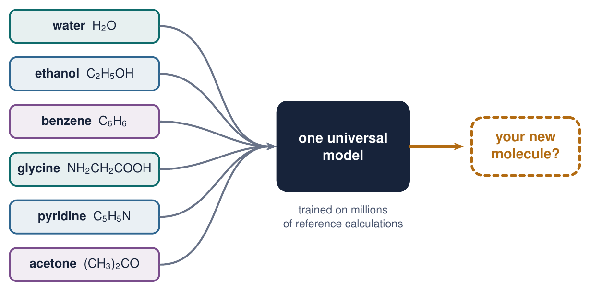
I. Batatia et al., arXiv:2401.00096 (2023); D. S. Levine et al., arXiv (2025); A. Mazitov et al., arXiv (2025).
So how is out-of-distribution performance tested for these models today?
How MLIPs are tested out-of-distribution
- Random splits of MD trajectories: test frames are near-duplicates of training frames
- Shifts in conditions: high temperature, distorted geometries, rare events, unseen elements
- Scaffold splits exist for molecular property prediction, but not for potentials
Missing: a controlled shift in composition, where every part is seen and only the whole is new.
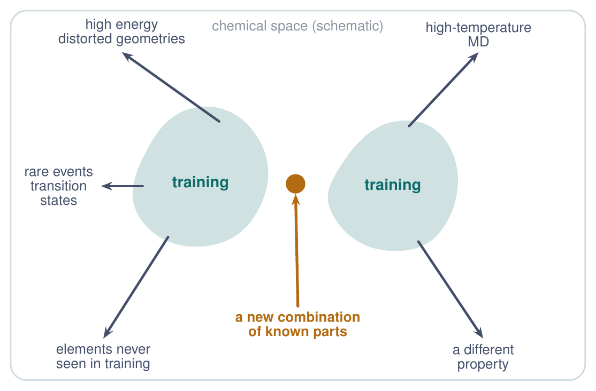
S. Chmiela et al., Sci. Adv. 3, e1603015 (2017); X. Fu et al., TMLR (2023); Z. Wu et al., Chem. Sci. 9, 513 (2018).
What would such a test look like for a potential?
The question
- Train on molecules built from fragments A, B and C
- Test on new molecules that join the same fragments in a new way
- A model that learned transferable local chemistry should find this easy
Do MLIPs generalise compositionally, or do they memorise the molecules they were trained on?
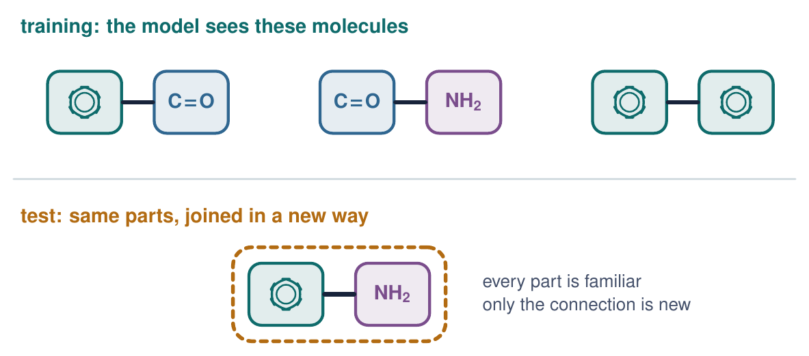
G. W. Bemis, M. A. Murcko, J. Med. Chem. 39, 2887 (1996); Z. Wu et al., Chem. Sci. 9, 513 (2018).
To answer this cleanly, we built a benchmark for it.
GMD: Generalisation for Molecular Dynamics
- 140 molecules in 12 families, built from H, C, N and O
- 300 K MD for each molecule, DFT energies and forces for every snapshot: about 280,000 labelled configurations
- Splits are by molecule, never by snapshot
Open data and code: huggingface.co/datasets/AmirMasoud/GMD
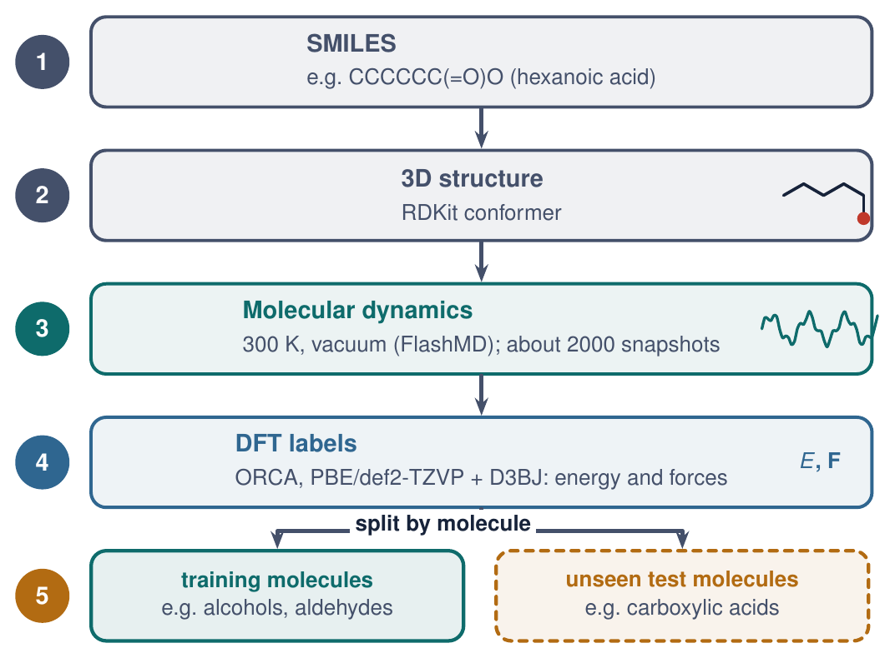
A. M. Nourollah, I. Khalid, S. Leoni, S. Schockaert, NeurIPS (2026), Evaluations & Datasets Track; arXiv:2605.08988.
Which compositional operations do we test?
Five compositional operations
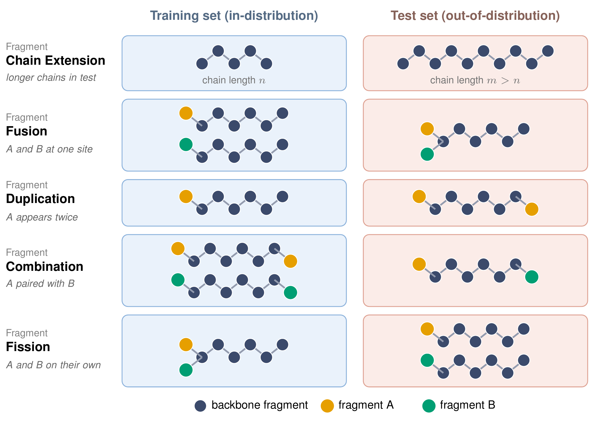
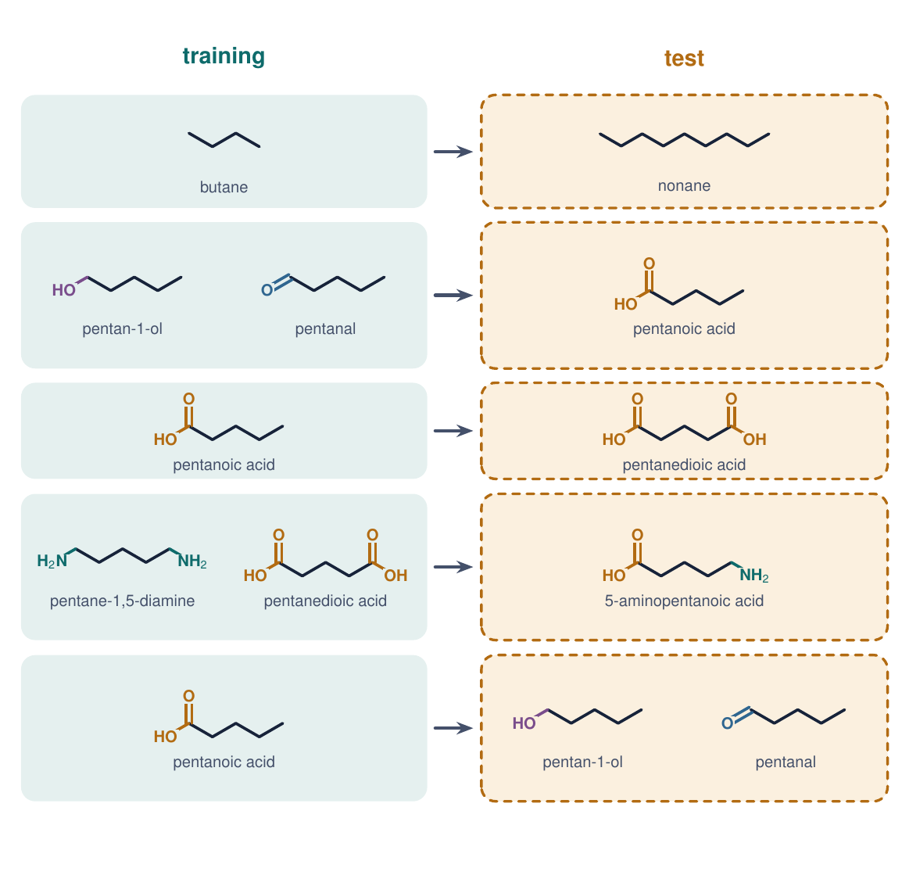
A. M. Nourollah, I. Khalid, S. Leoni, S. Schockaert, NeurIPS (2026), Evaluations & Datasets Track; arXiv:2605.08988.
Why such small molecules?
Design choices
- One operation per task: a failure has one cause
- Minimal shift: failing the smallest step is a strong negative result
- Consistent labels: one DFT level, cheap enough for many models
- Controls: augmented training sets and GFN2-xTB labels
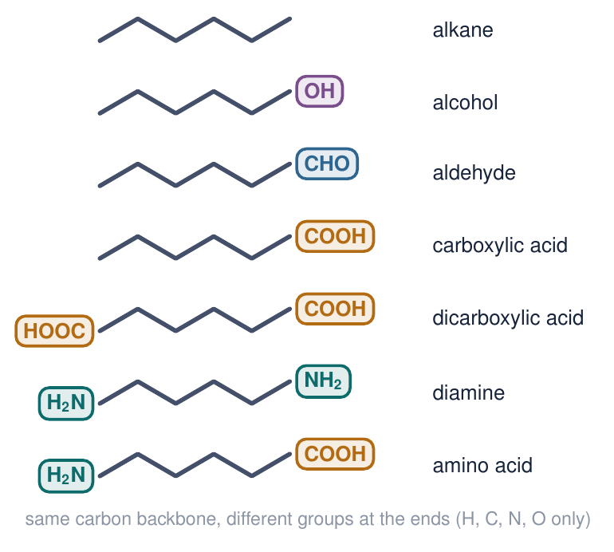
A. M. Nourollah, I. Khalid, S. Leoni, S. Schockaert, NeurIPS (2026), Evaluations & Datasets Track; arXiv:2605.08988.
Which models did we put through this?
Models and protocol
Trained from scratch
SchNet, DimeNet++, GemNet, PaiNN, NequIP, MACE, eSCN, EquiFormerV2: invariant to fully equivariant, 2017 to 2024
Foundation models
MACE-MP-0 Small, Medium and Large and UMA-Small, fine-tuned per task; MACE-MP-0 Medium zero-shot
Metrics
Energy and force MAE against DFT, on known molecules (ID) and new molecules (OOD)
Headline number
OOD/ID error ratio per model, averaged over tasks
A. M. Nourollah, I. Khalid, S. Leoni, S. Schockaert, NeurIPS (2026), Evaluations & Datasets Track; arXiv:2605.08988.
So what happens on new molecules?
Known molecules versus new molecules
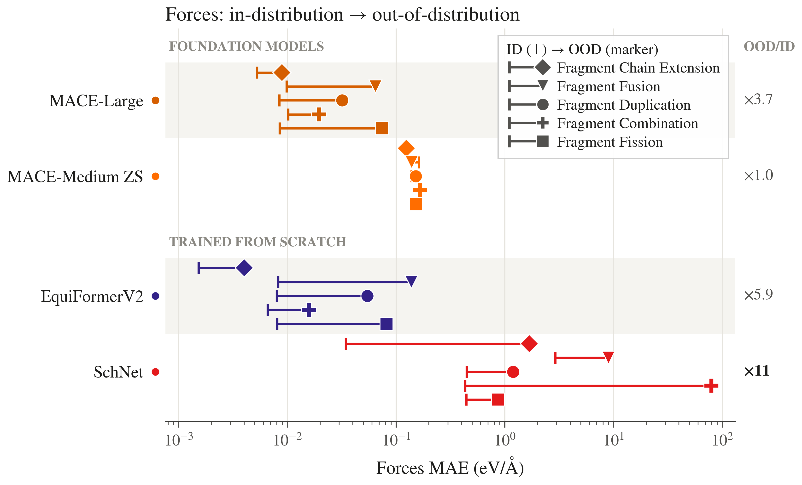
A. M. Nourollah, I. Khalid, S. Leoni, S. Schockaert, NeurIPS (2026), Evaluations & Datasets Track; arXiv:2605.08988.
Where inside a molecule does the error appear?
The error localises on the new composition
- Hexanoic acid, OOD in fusion: trained on alcohols and aldehydes
- Inner disc: force-magnitude error; ring: direction error
- Backbone is fine; error sits on –COOH, and it is mostly magnitude
Known: –OH and C=O. Not composed: –COOH.
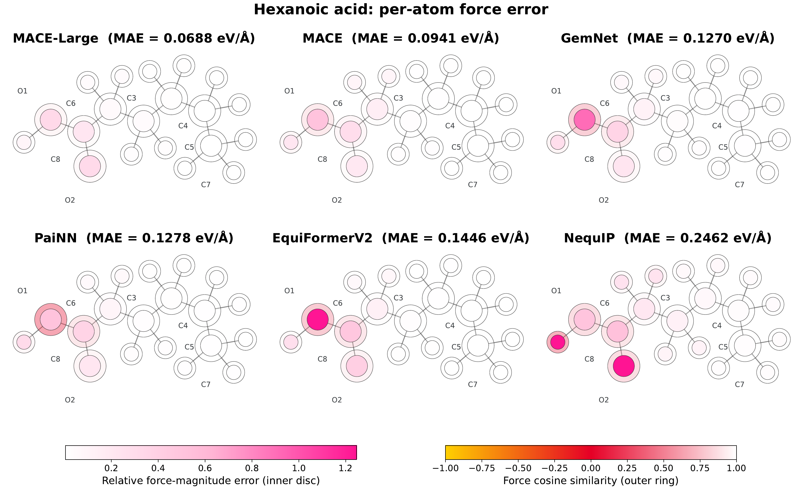
A. M. Nourollah, I. Khalid, S. Leoni, S. Schockaert, NeurIPS (2026), Evaluations & Datasets Track; arXiv:2605.08988.
Is length generalisation any easier than composition?
Chain extension: length generalisation is easier
- Train on C2 to C6 alkanes; test on C7 to C13
- Errors still rise with length, but far less than in the compositional tasks
- SchNet and DimeNet++ break down past the training lengths
Repeating a known part costs some accuracy. Composing parts in a new way costs far more.
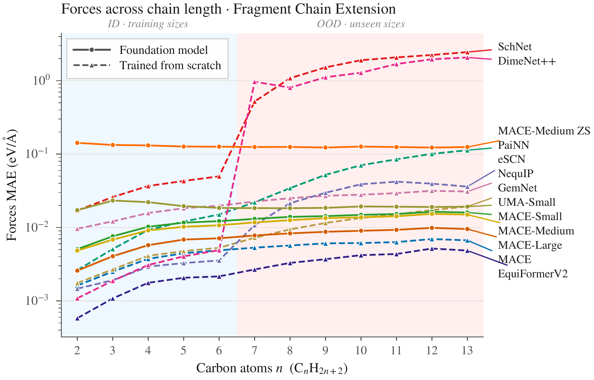
A. M. Nourollah, I. Khalid, S. Leoni, S. Schockaert, NeurIPS (2026), Evaluations & Datasets Track; arXiv:2605.08988.
Could more data, bigger models or pre-training close the gap?
Not a data, scale or label problem
Pre-training
Foundation models pre-trained on millions of structures do not consistently beat MACE trained from scratch on GMD
Scale
Larger MACE-MP-0 helps on some tasks; the OOD gap remains
Coverage
Augmented training sets do not close the gap on fusion
Labels
GFN2-xTB labels instead of DFT give the same pattern
Fine-tuning fixes the molecules the model was shown, not the ones it was not.
A. M. Nourollah, I. Khalid, S. Leoni, S. Schockaert, NeurIPS (2026), Evaluations & Datasets Track; arXiv:2605.08988.
So what does this mean for how we build and evaluate MLIPs?
Takeaways and future work
What we found
- Locality in the architecture does not give compositional generalisation
- Scale, pre-training and fine-tuning do not either
- ID accuracy is a poor proxy for OOD accuracy
- Random-split evaluations hide this failure
What I am working on
- An inductive bias that controls how the model learns a molecule
- Forcing it to represent molecules through their functional groups and how they connect
GMD gives a cheap, exact testbed for any such idea.
A. M. Nourollah, I. Khalid, S. Leoni, S. Schockaert, NeurIPS (2026), Evaluations & Datasets Track; arXiv:2605.08988.
Thank you
Amir Masoud Nourollah
Paper: arXiv:2605.08988 (NeurIPS 2026)
Data: huggingface.co/datasets/AmirMasoud/GMD
Code: github.com/Nourollah/GMD-26
Questions?
Backup: are the test environments really local repeats?
- The obvious question from an ML audience: with a cut-off of [rc] Å, does every OOD local environment appear in training?
- [Answer from the paper: share of OOD atom environments within the cut-off that have a close match in training]
Image: local-environment coverage
[If the paper has it: nearest-training-neighbour distance of each OOD atomic environment, for each task.]
env_coverage.png
A. M. Nourollah, I. Khalid, S. Leoni, S. Schockaert, NeurIPS (2026), Evaluations & Datasets Track; arXiv:2605.08988.

Knowing the parts, missing the whole